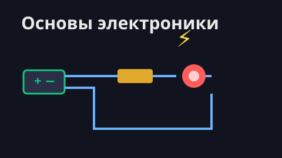

Как это работает
Каждый робот — отдельный курс из нескольких уроков: сначала собираем устройство, потом
пишем для него программу на Python (pygame). Робот не понимает Python напрямую — между ними
стоит плата Arduino со стандартной прошивкой Firmata, а из Python мы командуем ей
через библиотеку pymata. Никакого своего «протокола» учить не нужно: управляем
понятными объектами —
motor, servo, radar, button.
🎮 Что нужно знать заранее
Программы — на Python (pygame): игровой цикл, события,
get_pressed, списки,
экранные кнопки. Если ещё нет — начни
с игр. А с железом помогает вводный курс «Основы электроники» (ниже).
Курсы

⚡ Основы электроники
С чего начать: ток, напряжение, светодиод и полярность, транзистор-выключатель, мотор и H-мост. Руками на макетке, без программирования.

🤖 Робот MeArm
Собираем руку-манипулятор с 4 суставами и управляем ей с клавиатуры. Связь по USB, в финале рука сама переставляет предмет.

🚗 Робомашинка
Собираем машину на колёсах и рулим ей с ноутбука по Bluetooth — без проводов. На экране живой радар и автотормоз перед стеной.
🔌 В чём разница
У руки MeArm питание по USB-проводу — она стоит на месте и точно двигает суставами.
У машинки своя батарея — поэтому она ездит свободно, а команды летят по Bluetooth.
Это два разных способа подружить Python с железом.
Узнать больше
Подробная информация о школе — на сайте или по почте: